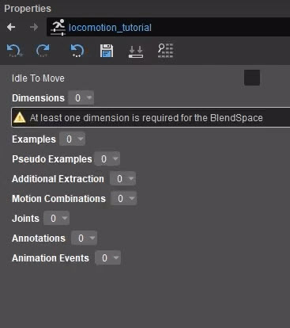
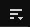
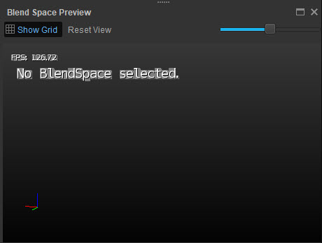
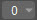

Обзор
Следуя предыдущему уроку, ваш персонаж будет иметь стандартную анимацию. Чтобы гарантировать динамическое изменение анимации в зависимости от направления или скорости персонажа, необходимы пространства смешивания.
Предварительные условия
- Персонаж со скелетом, сеткой и анимацией, импортированный в CRYENGINE (см. предыдущие уроки).
Создание и открытие файла пространства смешивания
- В папке, где находится ваш персонаж;
- Создайте папку с названием пространство смешивания;
В этой папке создайте текстовый файл и переименуйте его в <имя>.bspace, так например locomotion_bs.bspace;
Файл больше не должен иметь расширение .txt.
Вы получите предупреждение о том, что файл может стать непригодным для использования, но это нормально.
- Откройте CRYENGINE и откройте Character Tool (Инструменты → Анимация → Character Tool);
- В Character Tool найдите своего персонажа под Персонажи в Активы панель и double щелкните ее, чтобы открыть;
- В разделе «Анимации» на панели «Ресурсы» вы должны увидеть папку с названием пространство смешивания. Откройте его и щелкните файл пространства смешивания, который вы создали ранее, чтобы открыть его.
Предварительный просмотр пространства смешивания
Вы увидите, что в свойствах справа появилось несколько опций: 
Совмещение свойств пространства
Чтобы понять, что они делают, вам нужно открыть предварительный просмотр пространства смешивания в разделе меню  
Панель «Предварительный просмотр пространства смешивания»
Вы можете закрепить эту панель и изменить ее размер по своему усмотрению или даже открыть ее на втором мониторе.
Добавление размеров
Теперь вам нужно добавить размеры. Их количество зависит от количества измерений, в которых находится ваша анимация; если вы создаете только пространство для ходьбы, что мы будем делать в этом уроке, вам нужны только два измерения: Скорость перемещения и Угол перемещения.
- В Свойства панель, нажмите на раскрывающаяся кнопка

- Нажмите большую кнопку рядом с 0. и выберите Скорость перемещения;
Установите Макс значение для 7.5 и Количество ячеек чтобы 10; Повторите шаг 2 и выберите Угол путешествия. Установите его Количество ячеек чтобы 5 и Мин и Макс значение для 3.14;
Значения количества ячеек представляют собой линии сетки, на которых размещается анимация. Сколько вам нужно, зависит от оптимизации. Для этого урока подойдет значение от 5 до 10.
Анимации, используемые в этом уроке, охватывают 360 градусов движения (т. е. круг), поэтому использование радианов в качестве шкалы — самый простой способ убедиться, что все работает так, как вы хотите. Вот почему для угла перемещения используется 3,14 (Пи).
- Далее вам нужно добавить примеры. На панели свойств нажмите кнопку раскрывающаяся кнопка
рядом с Примеры и выбери Добавить; - Лучше всего начать с анимации Idle, которую нужно будет разместить на задней линии сетки. Нажмите большую кнопку рядом с цифрой 0. и выберите анимацию ожидания;
- Сделайте это еще раз и добавьте вторую анимацию простоя. Этому нужно будет немного переместиться к следующему углу, поэтому меняйте угол перемещения, пока он не окажется на углу;
Повторяйте шаги 4–6, пока во всех углах задней линии не появится анимация ожидания;
Поскольку вы установили угол перемещения на -3,14 и +3,14, это должны быть значения для анимации соответственно на правом и левом краях.
В следующем ряду начните с анимации ходьбы назад справа;
- Второй справа: добавьте анимацию ходьбы вправо;
- В середине этой строки добавьте анимацию ходьбы вперед;
Затем, слева от анимации ходьбы вперед, добавьте анимацию ходьбы влево;
- В крайнем левом углу добавьте ту же анимацию ходьбы назад, что и в шаге 8;
- В следующем ряду добавьте правый стрейф. бег анимацию и убедитесь, что она находится перед правильной анимацией ходьбы (6);
- Затем добавьте анимацию бега (вперед). Он должен быть расположен прямо посередине, на один квадрат впереди анимации бега вправо;
- Добавьте анимацию бега влево слева, так же, как анимацию бега вправо в шаге 13.
Аннотации
Теперь вам нужно соединить анимации вместе, чтобы движок знал, какие из них нужно смешать. Для этого вам необходимо добавить Аннотации в так называемые «квадратики».
- На панели свойств нажмите кнопку раскрывающаяся кнопка
рядом с Аннотации и выбери Добавить; - В раскрывающаяся кнопка
рядом с 0., выбирай 4 так как эта первая группа должна состоять из 4 анимаций; - Эти анимации необходимо добавлять против часовой стрелки, начиная с правого нижнего угла, поэтому добавляйте 0, 5, 6 и 1 именно в этом порядке;
- Сделайте то же самое для 1, 6, 7 и 2, 2, 7, 8 и 3, а также 3, 8, 9 и 4.
- повторите шаги 2 и 3, но поскольку следующая группа будет состоять только из 3 анимаций, выберите 3 вместо 4 анимаций.
Первая группа будет 5, 10 и 6; - Следующие две группы после этого снова будут иметь 4 анимации: 6, 10, 11 и 7, а также 7, 11, 12 и 8;
- Последняя группа — это снова 3 анимации: 8, 12 и 9.
- Сохраните все.
Назначение пространства смешивания персонажу
Пространство смешивания теперь создано, но еще не назначено (игровому) персонажу. Для этого:
- Откройте редактор Mannequin (Инструменты → Анимация → Редактор Mannequin);
- Перейти к Файл → Загрузить настройки предварительного просмотра... и выберите своего персонажа (это должен быть Player.xml если вы следовали предыдущим урокам и настроили этого персонажа в качестве игрового персонажа);
- В Активы панель, разверните Прогулка папку и назначьте созданное вами пространство смешивания в качестве анимации ходьбы (инструкции о том, как это сделать, читайте в предыдущий урок);
- Все готово!